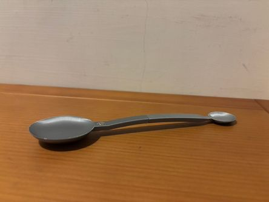
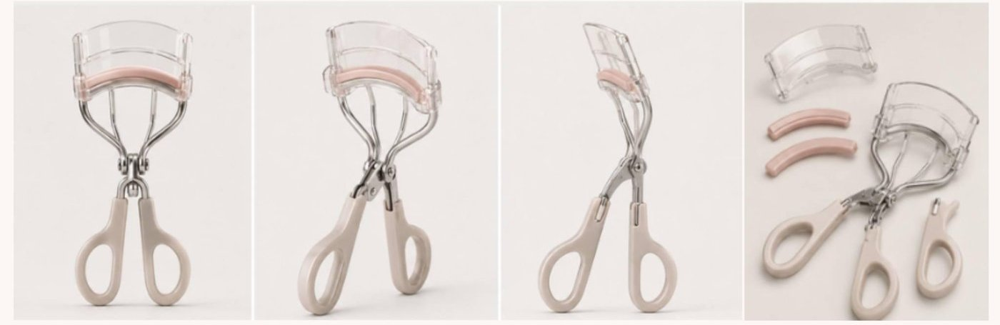
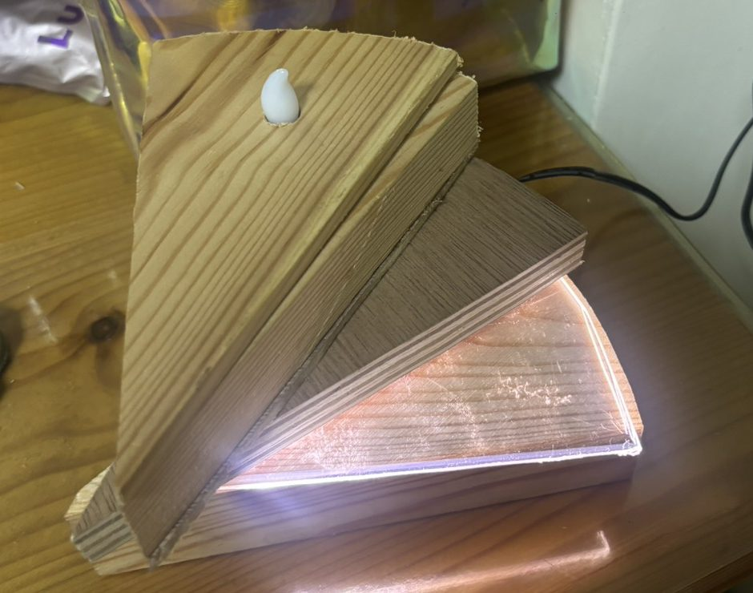
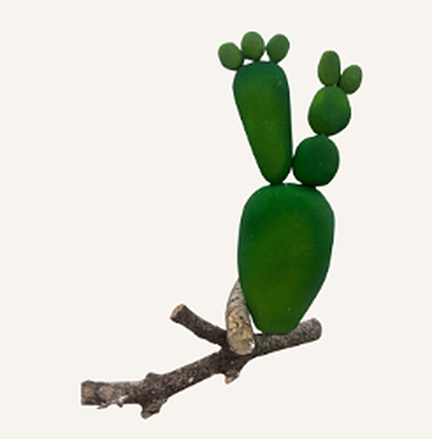
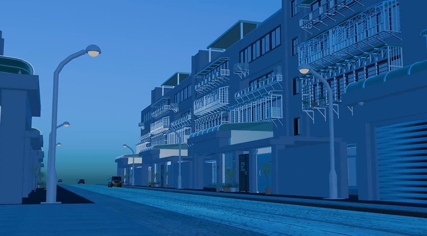

視覺設計Visual
擔任資工系學會、系露營美宣長，負責系上活動的海報、票券、節目單與社群視覺。
國立陽明交通大學資訊工程學系大四，修習「設計與創新科技跨域學程」。在程式之外，我用 3D 列印、木工和平面設計動手做東西，也用鏡頭記錄舞台上的瞬間。點進每件作品，可以看到從發想到完成的過程。

一支湯匙換三種尺寸。從轉軸改成磁吸，前後印了四個版本。
看更多 →
從一次障礙體驗出發：衛生紙架、洗手乳瓶與睫毛夾。
看更多 →一瓶給「總是在接住別人的人」的藥水，用藥品標籤的語言寫成。
看更多 →
轉開蛋糕的那一刻，光才從夾層裡亮起來。
看更多 →
用砂紙和銼刀，把 PU 發泡材磨成一株兔耳仙人掌。
看更多 →
寄住在流浪貓身上的女孩，回到媽媽的麵攤前告別。
看更多 →擔任資工系學會、系露營美宣長，負責系上活動的海報、票券、節目單與社群視覺。